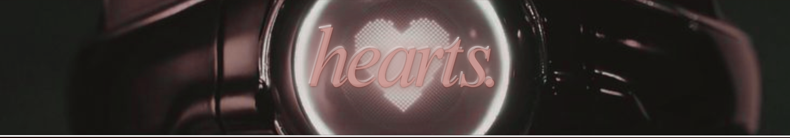
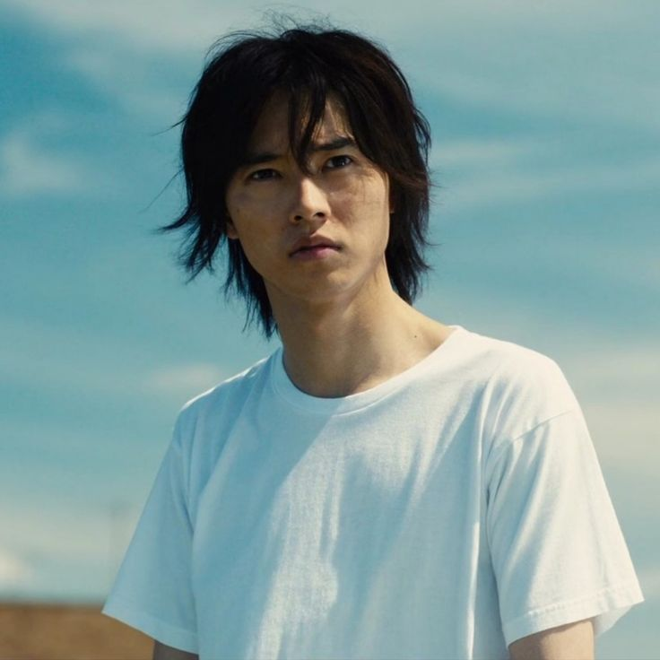

Ryōhei Arisu (有栖 良平, Arisu Ryouhei) is the protagonist of Alice in Borderland. He is played by Kento Yamazaki in the live action, and his speciality is Hearts. Arisu is a tall and lanky young man with shaggy black hair that slightly covers his eyes. In the original world, Arisu is a moody, unemployed teenager who spends his time indulging in his gaming addiction. He is best friends with Dakichi Karube and Chota Segawa—and the three of them gets transported to the Borderlands together.
As seen during his time in the Tokyo Borderlands, Arisu is a very caring and kind individual, whose first instinct is to place the lives of others over his. He shows compassion to new people he meets in games and tries to understand everyone's story and how they came to be. This is why, alongside his intelligence and critical-thinking, his abilities stand out as a Hearts player because of his understanding of other people's core values that gives him power to manipulate them emotionally.
